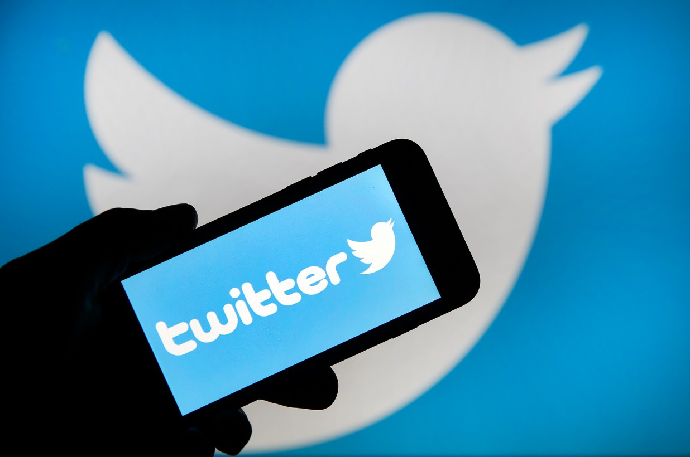
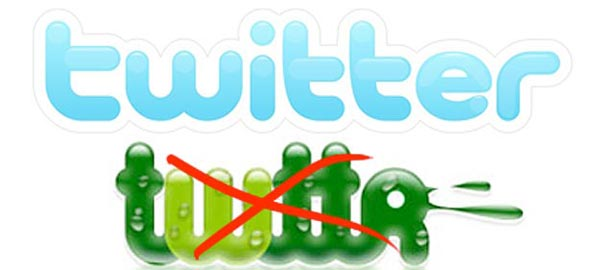
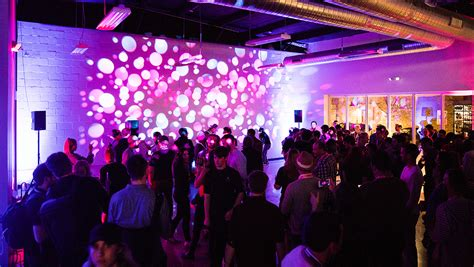

Early 2006
Jack Dorsey came up with the idea of a short messaging service that would allow users to share their status updates with a small group of people. He developed a prototype and presented it to the Odeo team.

The first tweet was sent by Jack Dorsey, officially marking the launch of Twitter. The tweet read, "just setting up my twttr" (at that time, Twitter was referred to as "twttr").
Twitter was officially launched to the public. The team decided to change the name from "twttr" to "Twitter," inspired by the definition of the word "twitter" which means "a short burst of inconsequential information."
2007
Twitter gained significant attention and popularity at the South by Southwest Interactive conference. The platform's growth began to accelerate, and it started to attract a diverse user base.
2009-2010
Twitter continued to grow rapidly, and the company introduced features like the "Retweet" button. The user interface was also refined to enhance the user experience. Twitter's user base reached 100 million and the company raised significant funding from investors.

Subsequent Years
Twitter went through various changes and updates, introducing features like the 280-character limit, Moments, and Periscope (a live video streaming service acquired by Twitter).
Conclusion
Over the years, Twitter evolved from a simple status-sharing platform to a powerful social media tool used for real-time communication, breaking news, and cultural conversations. The initial idea of sharing short, concise messages resonated with users and contributed to Twitter's widespread adoption. The platform has played a crucial role in shaping online discourse and connecting people globally.